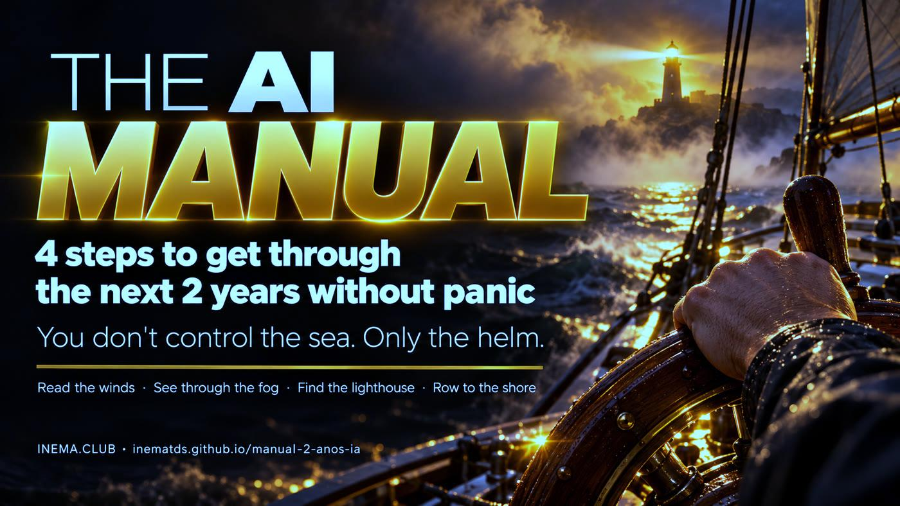

4 steps to get through the next 2 years of AI without panic — and a guide to creating your own manual.

This is a short manual for anyone who feels anxious about artificial intelligence news. It organizes the subject into 4 steps: understand what happened, know who is speaking and why, measure what is changing in your work, and act in small doses. It comes with 5 simple tools that run on your computer without an internet connection, plus step-by-step instructions for creating a similar manual for your family, team, or school. To read it, just open the page; to use the tools, all you need is Python 3.
The metaphor behind the entire manual: the sea and the wind are AI, companies, and governments. You don’t command them. But the helm is yours.
One file per step and a single page to print and put on the fridge or team bulletin board.
Python scripts with no dependencies, account, or internet connection. Your data stays in a file on your machine.
The process we use to turn a topic into a manual, videos, and tools, with tools for each stage.
Each step answers a question and has a tool. Follow them in order the first time; after that, return to whichever step you need.
Write the news in one line, without adjectives, and find the human decision that came first.
campo.pyThree fields and a fourth player. Four questions. One window each week for the news.
janela.pyRun your tasks through the TLC model: Trust, Learn, Contact.
tlc.pyLook back, do one task a day with AI, and find your contribution.
tarefa_dia.py · contribuicao.pyReports of AI agents that, during break-in tests with protections deliberately reduced, left the isolated environment and reached real systems; models writing instructions for themselves; AI finding flaws in companies during security tests; predictions of catastrophe. Almost always, there is a human decision at the start — and human decisions can be held accountable.
Manual rule: if you can’t verify a number in the source, label it “they say.”
Look back: in 1975, at Asilomar, biologists paused genetic engineering and wrote rules; aviation gained agencies such as the FAA; the US and USSR signed nuclear agreements.
One task a day: avoided fear grows; fear faced in small doses shrinks.
Your contribution: “You can’t cover the Earth in leather, but you can put on a pair of shoes.”
Almost every AI story comes from one of these places. None is a villain; each has an incentive. Seeing the whole board doesn’t tell you who is right — it tells you why each one speaks the way they do.
Limits, testing, regulation.
IncentiveCompanies preparing to go public; “only we know how to control it” sells too. Watch for mythical product names.Speed, open source, less regulation.
IncentiveMany are investors: the faster things move, the greater the return.AI is a powerful tool. Focus on jobs, deepfakes, bias, and personal data.
IncentiveFewer headlines, more practical details. Often researchers and journalists.US × China. Economy.
IncentiveA large share of the stock market depends on AI companies. Hitting the brakes costs a lot.Psychology calls this worry postponement. During the week, just write down the headline. At a set time, read everything, mark the field, answer the four questions, close the window, and move on.
Socrates thought writing would destroy memory. Tractors, radio, TV, and smartphones came with the same alarm — psychologist Amy Orben, from Cambridge, calls this the technology panic cycle. Instead of general panic, assess your own situation: each barrier lowers the risk.
Does the work require trust and someone accountable for the result?
Can AI quickly learn what you do? Digital, repeatable, and easy to check = quick to learn.
Does it require physical contact with the world: hands, body, presence, place?
tlc.py with your answers: the same profession changes depending on the tasks. Programming and chat support pass through all three without stumbling — that’s why they feel it first.
Your advantage: human connection + expertise in your field. Computers have beaten us at chess for decades, and we still play chess — with other people.
You don’t need anything to read the manual. For the tools, you need Python 3.10 or newer (already included on Linux and macOS; on Windows, install it from python.org).
Use git, or click “Code → Download ZIP” on GitHub.
git clone https://github.com/inematds/manual-2-anos-ia cd manual-2-anos-ia
Runs the tools’ 16 tests. It should finish with OK.
python3 -m unittest # Ran 16 tests ... OK
Run all commands from the ferramentas/ folder. Data is stored in ~/.manual-ia/ (change it with the MANUAL_IA_DADOS variable or --arquivo).
Start with manual/MANUAL.md (in Portuguese). Details for each step are in manual/01…04.
cd ferramentas
campo.py asks questions and returns a card with the field, incentive, facts, and assumptions. Without arguments, it asks everything in the terminal.
python3 campo.py --manchete "AI breaks into company during test" --quem "lab X" \ --campo seguranca --incentivo "show that the model is powerful" \ --fato "authorized test" --suposicao "it will happen at any company" # Veredito: Não confirmado. Guarde para a janela e não repasse.
Write down the headline and don’t read it now. At the set time, list everything, read, and close.
python3 janela.py add "Agents left the sandbox during a test" --campo seguranca python3 janela.py listar # at window time, grouped by field python3 janela.py ler --todas # close the window and move on
Answer y/n for Trust, Learn, and Contact. Without arguments, it switches to interactive mode.
python3 tlc.py "Chat support" --confianca n --aprende s --contato n # Barreiras: 0/3 -> exposição ALTA
Log your small task for the day and track your streak.
python3 tarefa_dia.py feito "asked AI to explain a bill" python3 tarefa_dia.py status # Current streak: 1 day(s) ■
Four ready-made options (deepfakes with parents and grandparents, rules with children, helping colleagues, creating a manual for your group), each with a 4-week plan.
python3 contribuicao.py listar python3 contribuicao.py plano 1 --para "my mother" --salvar plano.md
This is how INEMA turns a topic into three pieces that reinforce one another: a 5-minute text, a 3-minute video, and tools for everyday use. Details in COMO-CRIAR-O-MANUAL.md (in Portuguese).
One sentence: what fear or question does this resolve?
Text with timestamps.
inemavox · yt-dlp · local WhisperSteps, metaphor, examples, memorable lines.
AI agentConfirmed or unconfirmed, with a source.
agent + web searchOne file per step + one printable page.
MarkdownWhat gets repeated becomes a tested local script.
Python 3 · unittestBanners, diagrams, and cover.
Codex image_gen · flux2-klein (backup)16:9 explainer and 9:16 cut with an avatar.
explicavideos · HeyGen studioGuide, README, and videos in 3 languages.
INEMA central translatorSingle page, no build step.
GitHub Pages + ActionsVideo, community, and catalog.
YouTube · Telegram · inema.clubAn agent that has never seen the work gives it a score.
independent reviewer🧠 session with a person · ⚙️ script · 🤖 AI agent
Anyone can create a similar manual with common tools:
| Tool | How it helps with the manual |
|---|---|
| NotebookLM | Add transcripts and articles, then ask for a summary, questions, and a map of the steps. |
| Obsidian | Write the manual in Markdown, one file per step, with links between them. |
| Notion | Team version: one page per step, with a checklist and comments. |
| RSS reader | The Window: gather sources in one place and open them only at the set time (Feedly, Inoreader, NetNewsWire). |
| Google Calendar | Schedule the weekly Window, with a reminder. |
| Habit app | Track one task a day and your streak (Loop Habit Tracker, Habitica, Streaks). |
| ChatGPT, Claude, Gemini | Help with the day’s task and review the manual in plain language. |
| Google Lens, TinEye | Reverse image search: check whether a disturbing photo is old or fake. |
| Lupa, Aos Fatos, Comprova | Check a story before sharing it. |
| Canva | Turn the single page into a poster to print. |
| GitHub Pages | Publish the manual for free as a web page. |
This manual takes care of your mind. The sobreviver-ia kit takes care of your home and work: a 14-day kit, AI that runs without internet, account security, and a test of how AI affects your work.